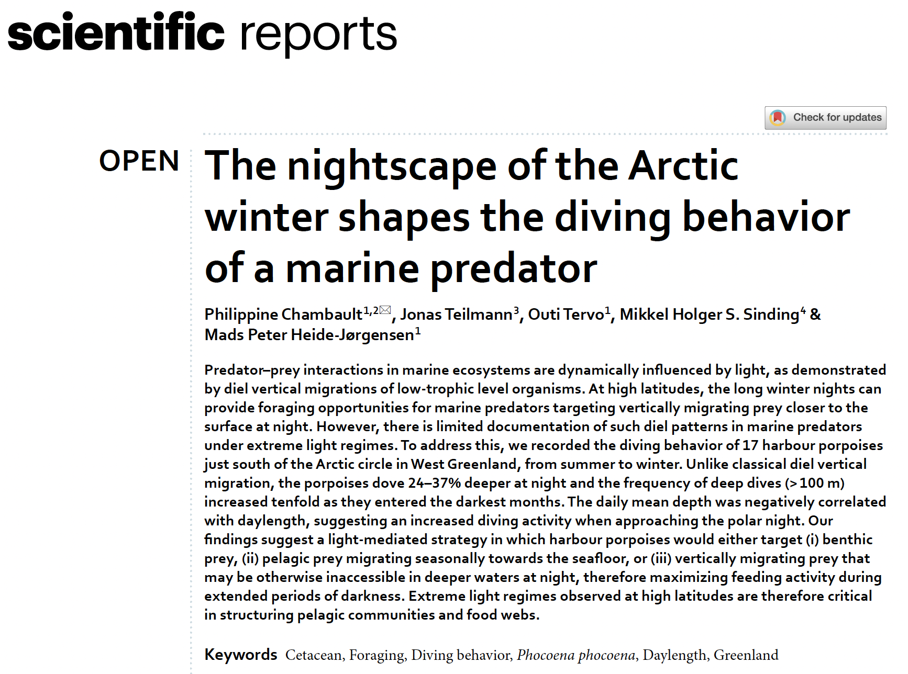
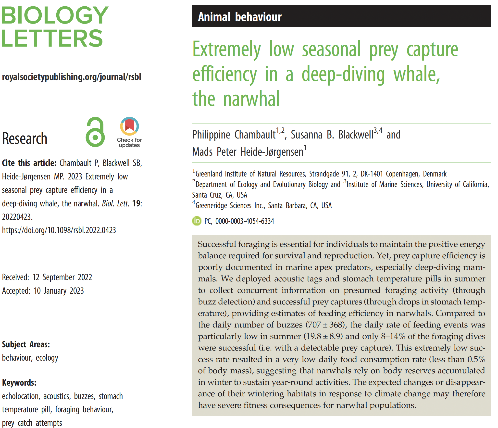
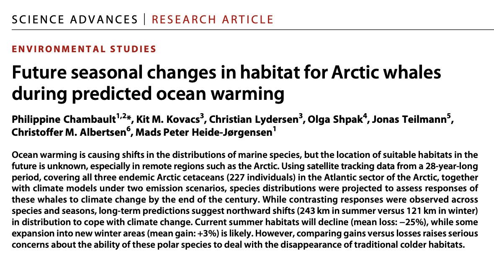

The WARMM project

The WARMM project (Warming ocean And Responses of Arctic Marine Mammals) aims at investigating and predicting the behavioral and physiological responses of Arctic cetaceans to climate-induced perturbations. Despite their crucial role as bio-indicators of the Arctic marine ecosystem, the capacity of Arctic cetaceans to adjust their behavior and physiology to climate-induced perturbations remains poorly understood. This is largely due to (i) the logistical difficulties in capturing and tagging these animals that spend their entire life at-sea. (ii) The short time-series and small sample size that are commonly available from tracking dataset also limit the use of robust predictive models. Finally, (iii) the lack of physiological studies also contributes to our misunderstanding of how these cold-tolerant species will adapt to an imminent thermal stress. To overcome these limitations, the WARMM project will combine biologging techniques and eco-physiology in animals both in the wild and in human-care facilities (Long Marine Lab-UCSC and Georgia Aquarium in the United States and Sea Life Trust in Iceland).
This project is funded by a 3-year EU MSCA fellowship that was hosted between the University of California Santa Cruz (Santa Cruz, USA) and the Greenland Institute of Natural Resources (Copenhagen, Denmark).
Progress in 2024
A third article was published in Scientific Reports and investigated the effect of extreme light regimes on the diving behavior the Greenlandic harbour porpoise.

Given that mesopelagic predators such the Greenlandic harbour porpoise target vertically migrating prey at night, we assumed that this species would increase its diving activity with the reduction of daylength during winter in the Arctic. Both diel and seasonal patterns were evidenced. Our results showed deeper nocturnal dives compared to diurnal dives, together with an increasing frequency of deep dives (>100 m) when approaching the darkest months. This suggests for the first time that harbour porpoises might take advantage of the long periods of darkness in the Arctic winter to maximize food intake while minimizing energy expenditure (hunting prey closer to the surface at night).
Progress in 2023
A second article has been published in Biology Letters in February 2023. This second publication on the prey capture efficiency of narwhals shows the extremely low prey capture success of narwhals in summer (<14% of the foraging dives were successful) despite an intense foraging activity (706.9±368 buzzes per day per individual).

In parallel, the development of a new tag measuring the heat transfer between the whale’s body and its environment was initiated to investigate the physiological responses of Arctic whales to rising sea temperatures. Specifically, this heat flux tag aims at investigating when the whales dump or gain heat during and after exercise. I worked during 9 months with CATS (Customized Animal Tracking Solutions) based in Australia, to design the adequate heat flux tag capable of being deployed for several hours on different cetacean species such as dolphins, belugas and narwhals using a non-invasive technique. It was our intention to develop a non-invasive attachment using suction cups for ethical considerations, but also because we plan to work with animals in human-care held in different facilities opened to visitors (e.g., Georgia Aquarium in USA, Sea Life Trust in Iceland). The heat flux tag is composed of two main components:
1) The main recorder that includes six different sensors: light, pressure (e.g., animal’s depth), water temperature, 3D accelerometer (e.g., animal’s body motion), gyroscope and magnetometer.
2) Two heat flux discs connected to the recorder that measure skin temperature and heat flow.
In parallel to studies on the three Arctic whale species endemic to the Arctic, another project focuses on the diving behavior and energetics of a sub-Arctic species, the harbour porpoises in Greenland. An article on the light-mediated diving behavior of Greenland harbour porpoises has been submitted in July 2023 to Scientific Reports and recently received a positive review. This manuscript shows that harbour porpoises experiencing contrasted light cycles at high latitude adjust their diving behavior in response to the reduction of daylength, diving deeper during the darkest months, likely to follow the vertical migration of their prey at night. This finding suggests a strategy in which this mesopelagic predator take advantage of the long period of darkness in the Arctic winter to maximize food intake while minimizing energy expenditure.
Progress in 2022
The first project’s article has been published in Science Advances in July 2022. In this paper, we predict current and project future distribution of the three cetacean species endemic to the Arctic (the beluga whale, the narwhal and the bowhead whale) under different climate change scenarios. Compiling satellite tracking of 227 individuals in the Atlantic sector of the Arctic, this article projects a serious habitat loss for the three species by 2100, with differences among species, sub-populations and seasons.
